Product Name: Car Blind Spot Mirror
Material: ABS + High definition glass
Color (Optional): white, black
Size: 10 x 7 x 6cm/3.9 x 2.8 x 2.4inch
Style (Optional): Style 01, Style 02
Parts List:
1 Pair of Car Blind Spot Mirror
Highlight description:
【2 Side Car Blind Spot Mirror】The mirror is designed to avoid the blind spots, both front and back can be seen. Suitable for most cars, SUVs, RVs and trucks.
【High-definition Mirror】High-definition mirror, increase the area of the mirror, and make the visual effect clearer. The adhesive clip is more stable and the installation is more convenient.
【Safety Driving】This mirror can help you solve the problem of blind spot when reversing, and drive more safely.
【Car Auxiliary Mirror】The side parking line can be precisely adjusted, and the reflection angle can be adjusted freely. It is suitable for installation on rear-view mirrors and side mirrors.
【Warm Prompt】You cannot install it immediately after washing the car. You need to wait for the mirror on the car to dry before installing it. Use it after 24 hours of installation (because the glue must be dry) otherwise it will not be fixed.
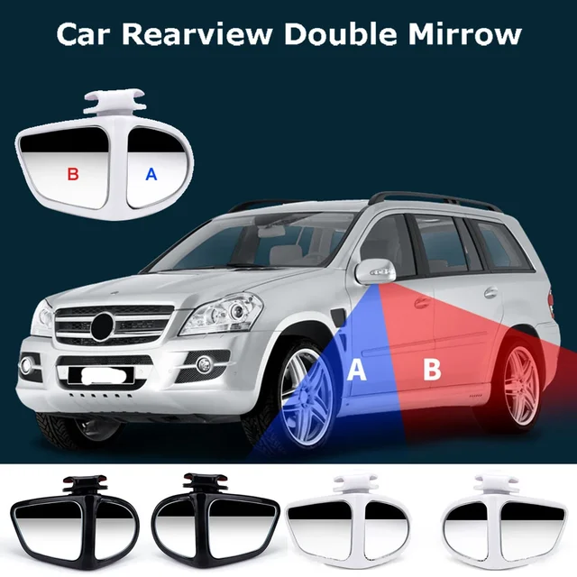
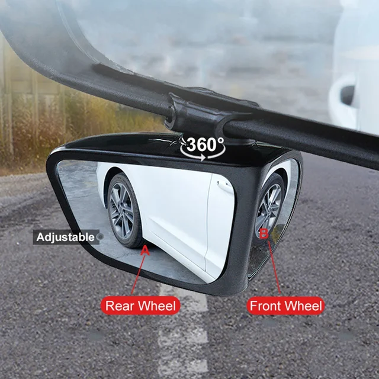
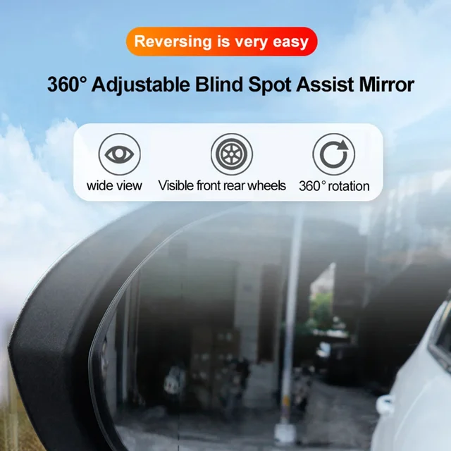
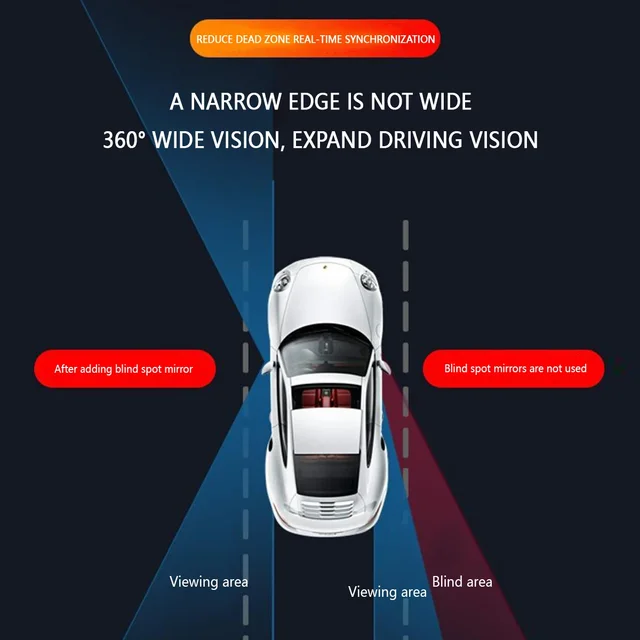
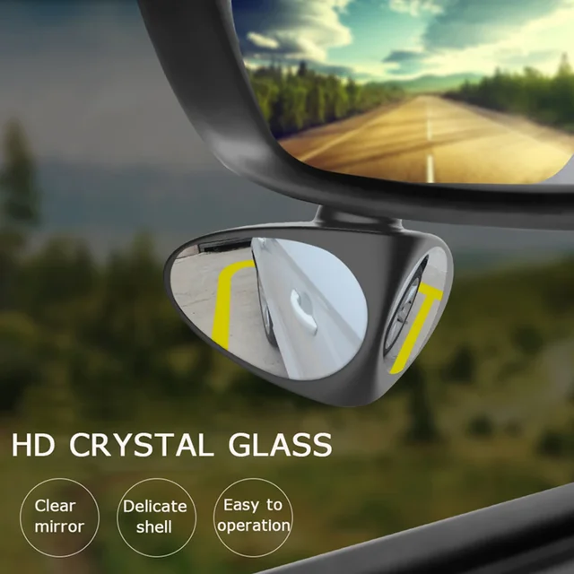
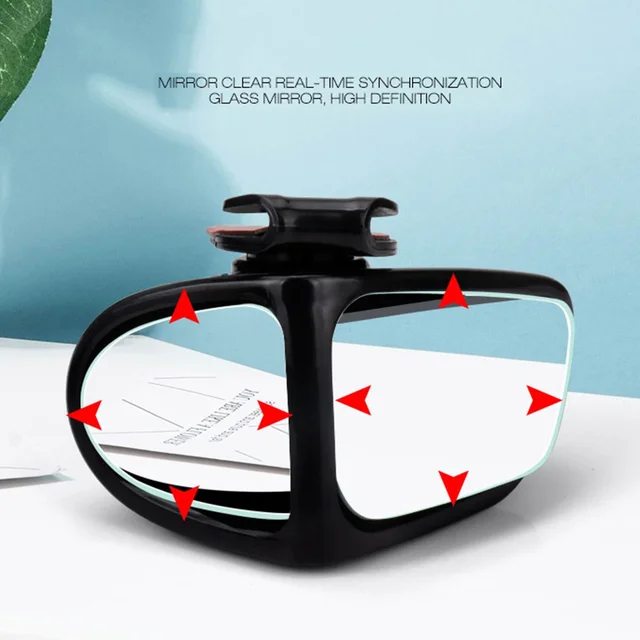
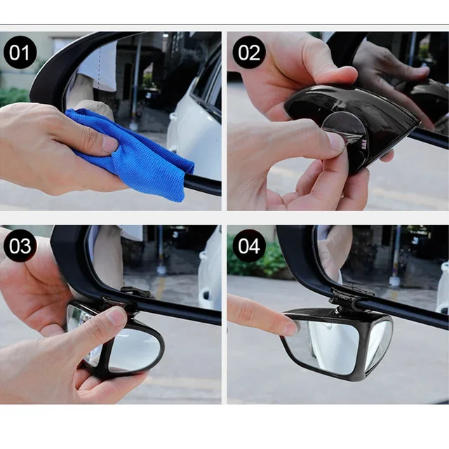
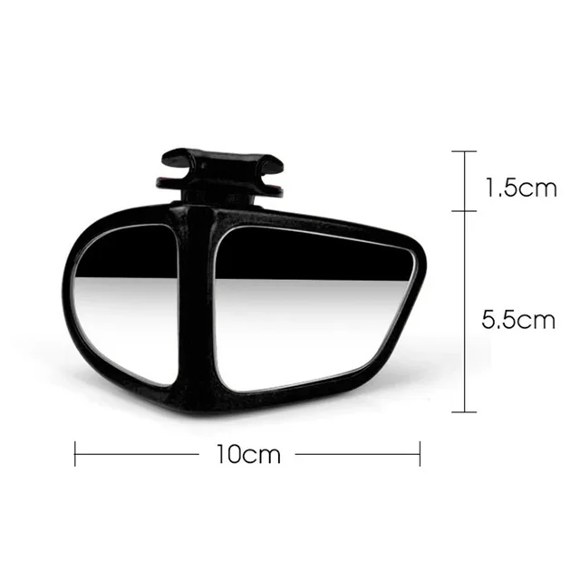
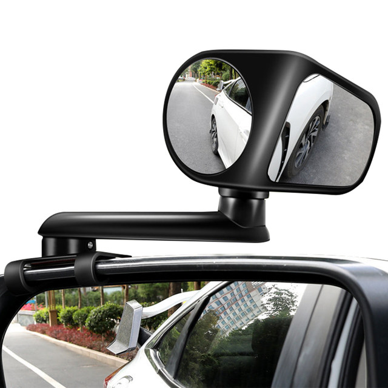
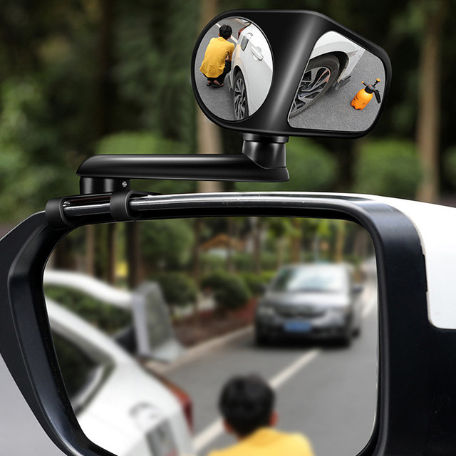
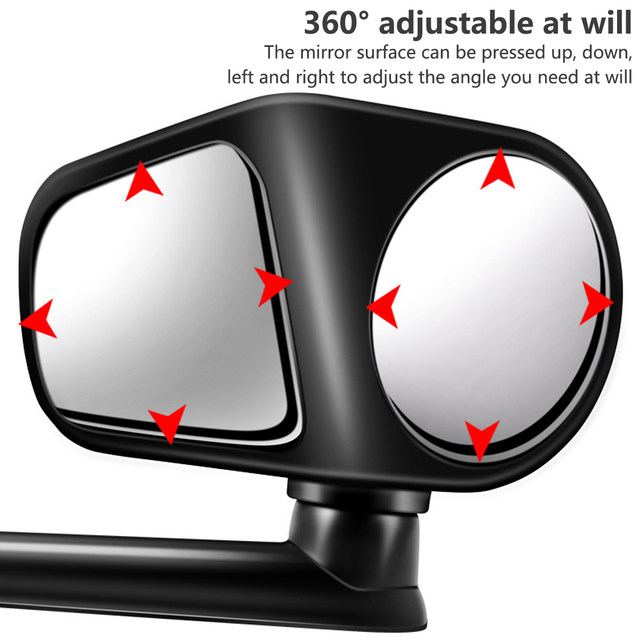
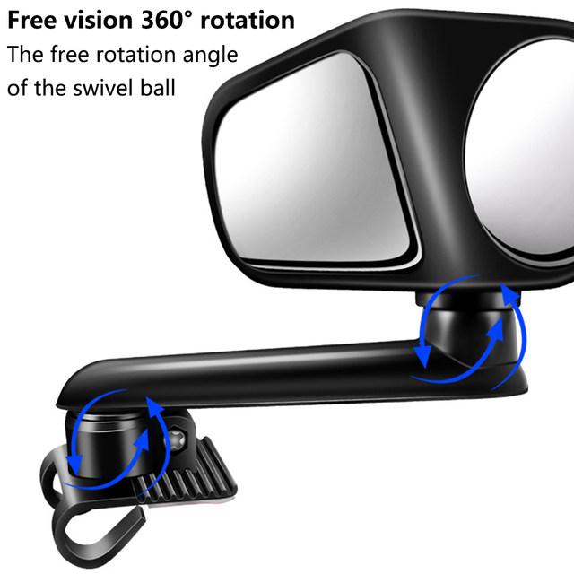
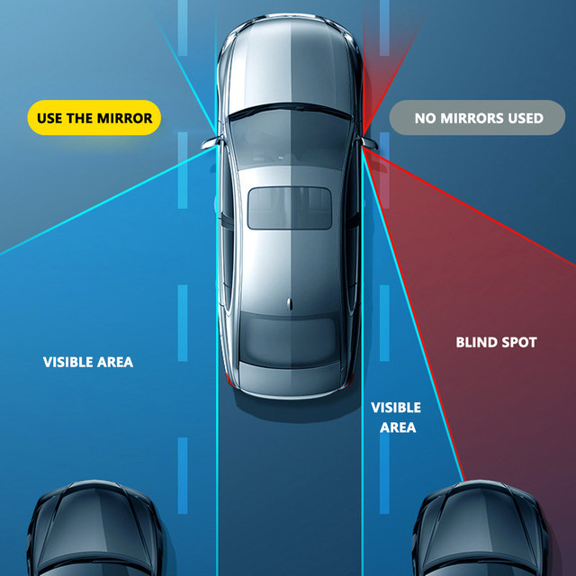
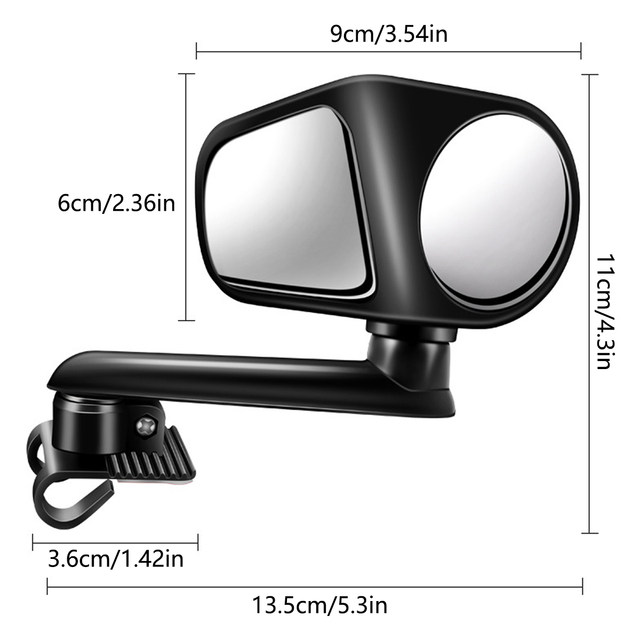
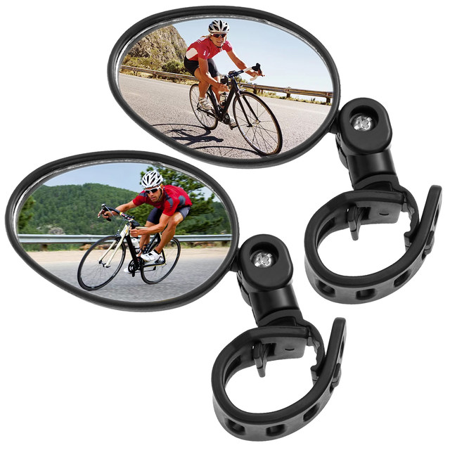
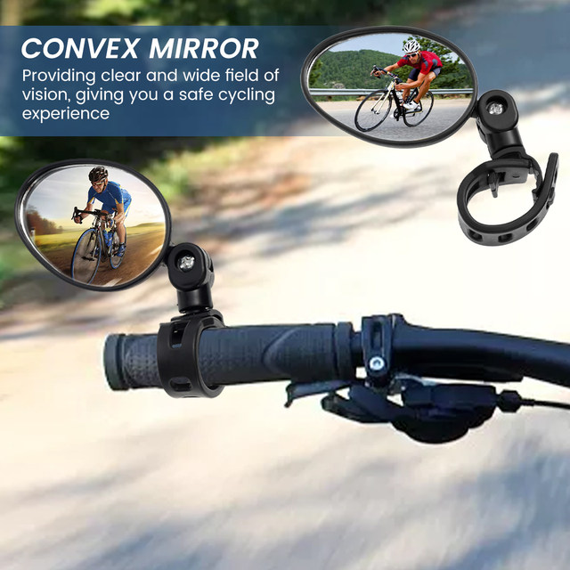
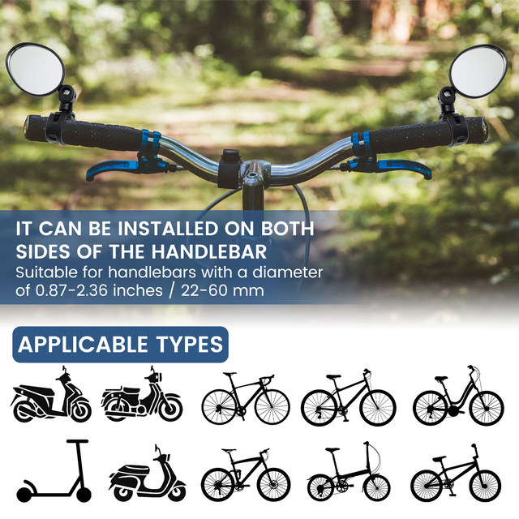
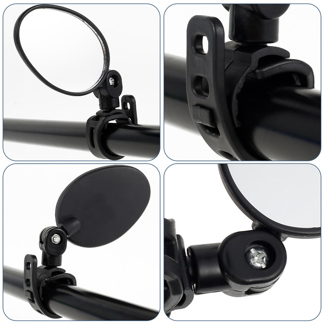
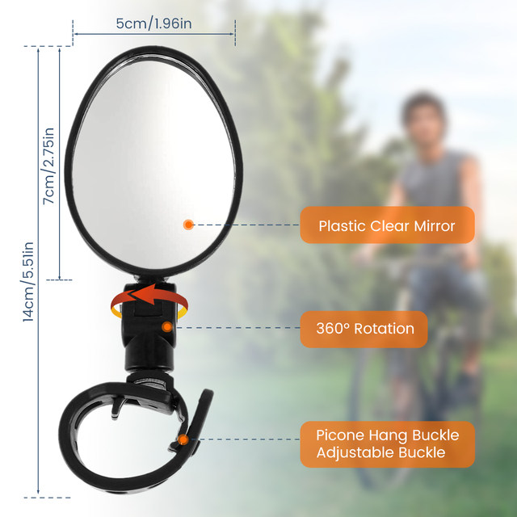
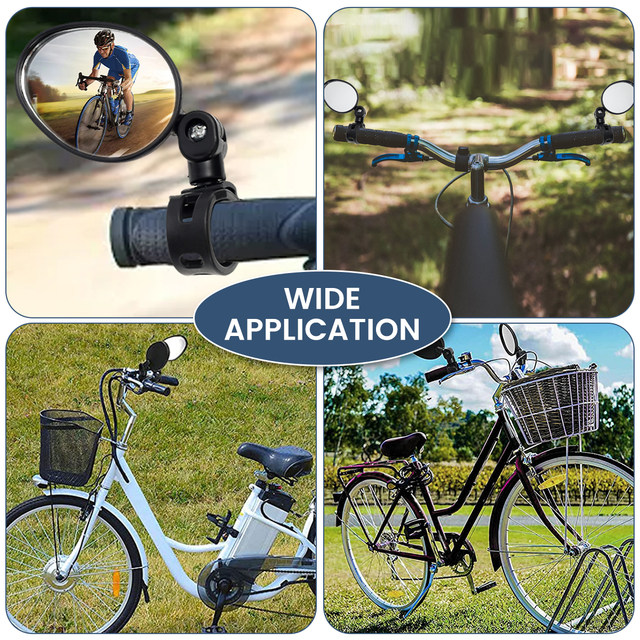
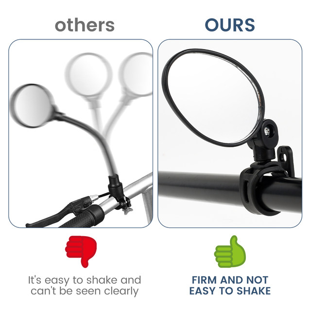